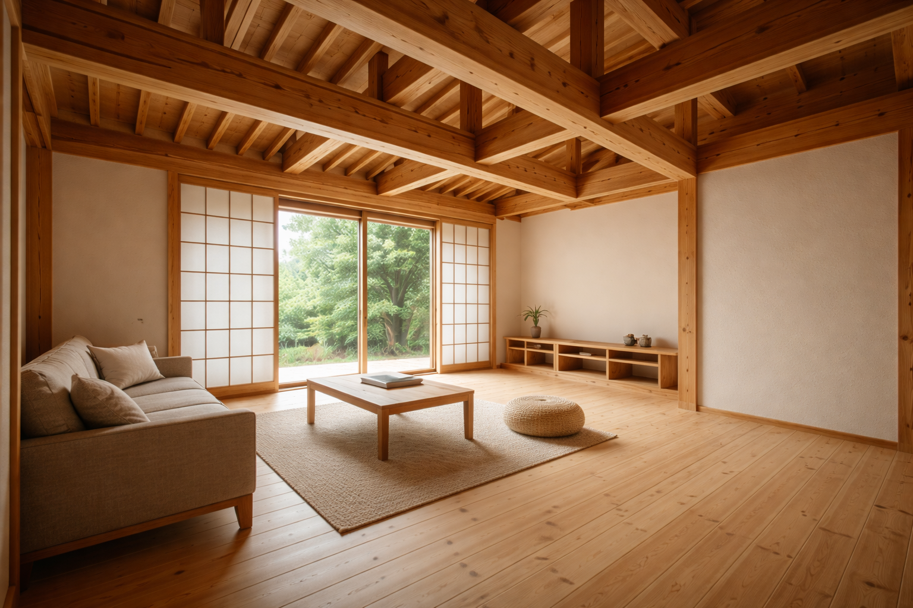
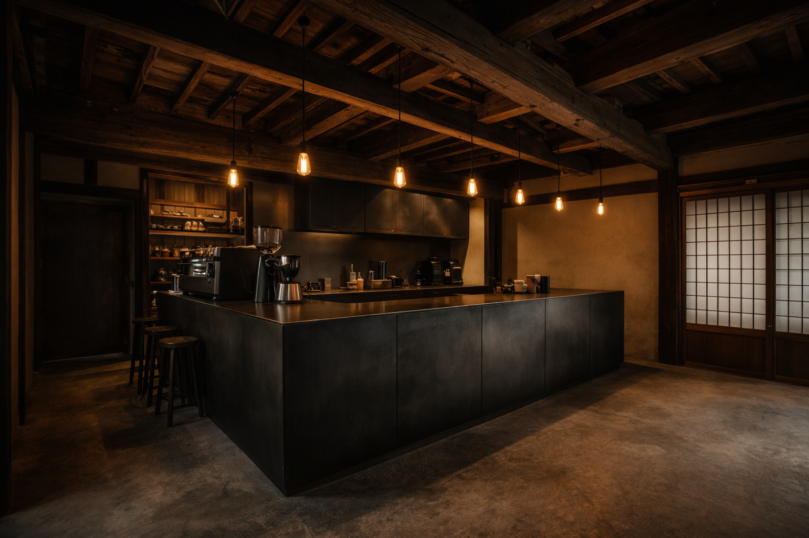
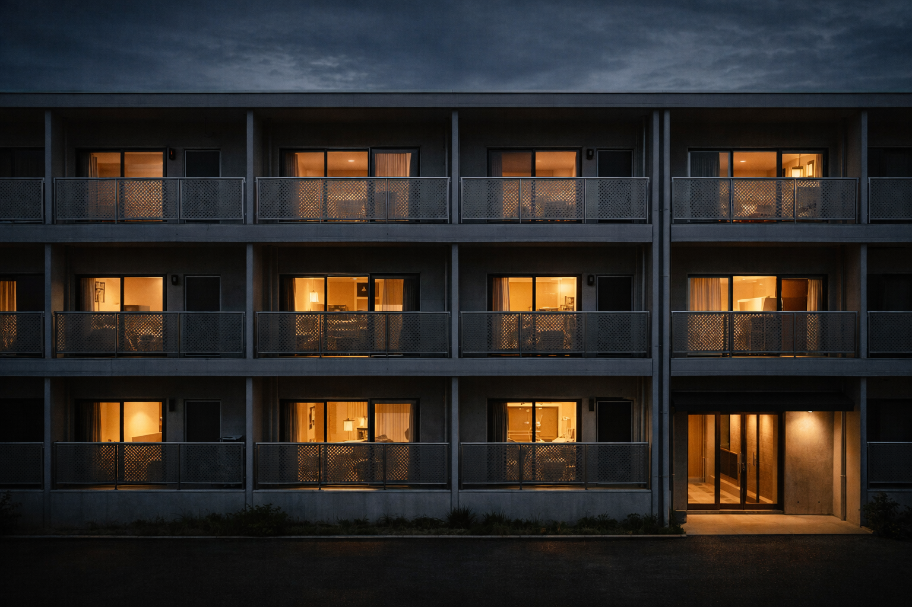
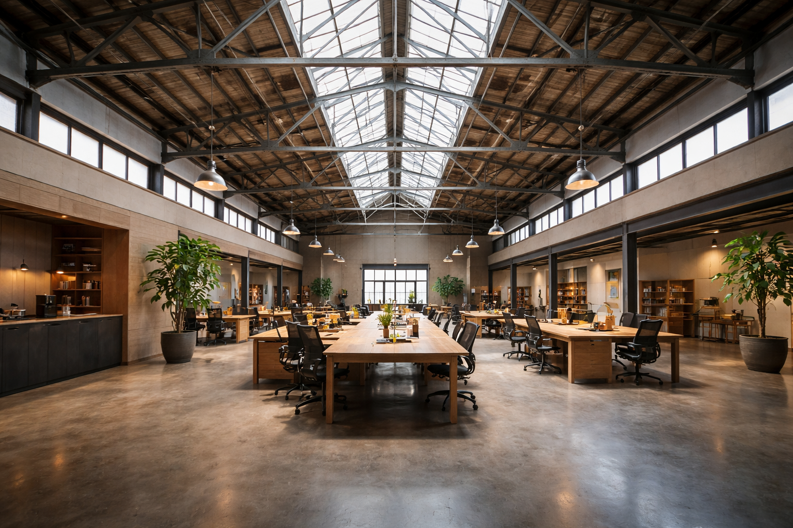
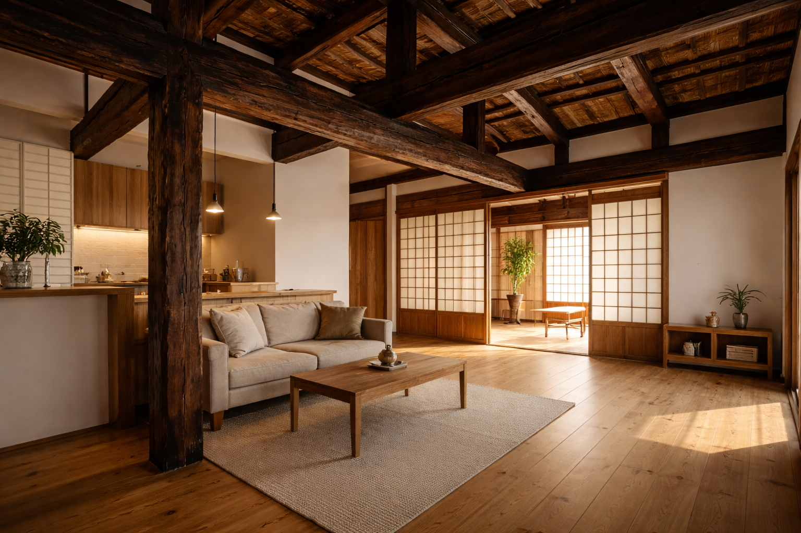

T邸 — 木の温もりを纏う家
地元産の杉材を主軸に、開口部と光の入り方を丁寧に設計した2階建て住宅。家族それぞれの時間と、集う場をつなぐ間取りを実現しました。延床面積 98㎡。
施工実績
住宅・店舗・改修・小規模公共。
これまで手がけた現場の一部をご紹介します。

地元産の杉材を主軸に、開口部と光の入り方を丁寧に設計した2階建て住宅。家族それぞれの時間と、集う場をつなぐ間取りを実現しました。延床面積 98㎡。

築35年の町屋を、地域のコーヒースタンドへと再生。既存の梁を活かしながら、現代的なディテールで空間に奥行きをつくりました。施工面積 42㎡。

昭和50年代築のアパートを、断熱・耐震・意匠の三軸で改修。住み続けながらの段階施工を実現し、入居率の回復につなげました。全16戸。

重量物の搬入導線と事務作業の快適性を両立した平屋建て。屋根架構の現しと大開口が、作業場らしい力強い空間をつくっています。延床 220㎡。

築60年の実家を、3世代が同居できる家に再編。残すべき痕跡を見極め、新旧の素材が自然に混ざり合う空間を設計しました。施工面積 124㎡。